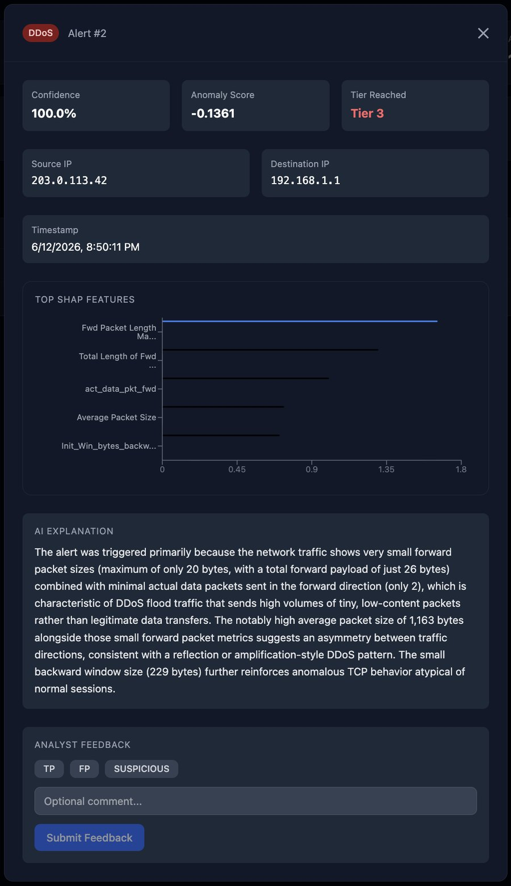

Cybersecurity Analyst
I investigate phishing and email threats on a security operations team, and I build tools that make alerts easier to understand. Next, I want to work in identity and access management.
01 / About
I started in aeronautical engineering, then moved into security and finished an M.S. in Cybersecurity at Grand Valley State University. Engineering taught me to care about how systems fail, and security turned out to be the same question asked by someone who wants them to.
Right now I work on a security operations team, mostly on phishing and email threats. The part I enjoy most is the investigation itself: following one suspicious email until the whole picture makes sense.
I am an introvert until I am comfortable, at which point I become the person landing jokes nobody asked for but everyone appreciated. I pick up new tools fast, document everything, and do not close a ticket until the problem is actually solved.
I am preparing for CompTIA Security+ and looking for SOC analyst and identity and access roles.
02 / Experience
Part of a security operations team, investigating phishing and email-based threats and escalating what needs a closer look.
Supported account migrations, duplicate-account remediation, and access troubleshooting for a departmental web application integrated with the university's central SSO. Handled PII, documented resolutions in TeamDynamix, and maintained account remediation records. Built a scheduled Tines workflow to automate biweekly payroll submission reminders for the team.
The full details are on my resume.
03 / Projects
Most intrusion detection alerts tell an analyst that something is wrong, but not why. I wanted to build one that explains itself.
xIDS looks at network traffic in three stages. An anomaly detector screens out normal traffic, a classifier names the type of attack, and SHAP shows which traffic features drove the decision. For confident alerts, it adds an IP reputation check and a short plain English summary written by Claude, and an analyst can mark each alert as a true or false positive.
The biggest lesson was how easy it is to oversell a model. I report the score on data the model never saw during training, not the higher number from tuning.

A black-box test of OWASP Juice Shop, a deliberately vulnerable practice app. I chained SQL injection, broken authentication, and cross-site scripting to escalate privileges, then wrote up each finding with a CVSS score and a fix.
I examined a test Android device that had been compromised with Metasploit, traced what the attacker changed, and documented the evidence and timeline in a formal incident report.
04 / Lab
05 / Skills
Certifications and Training
06 / Contact
I am looking for SOC analyst and identity and access roles. If you are hiring, or just want to talk about security, email is the best way to reach me.